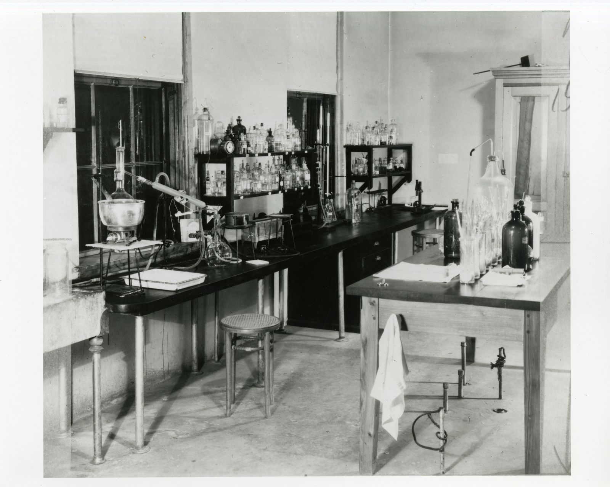

Wrapping my black coat round me like my own sweet shadow, I unscrewed the bottle of pills and started taking them swiftly, between gulps of water, one by one by one. At first nothing happened, but as I approached the bottom of the bottle, red and blue lights began to flash before my eyes. The bottle slid from my fingers and I lay down.
Sylvia Plath · The Bell Jar · p. 217